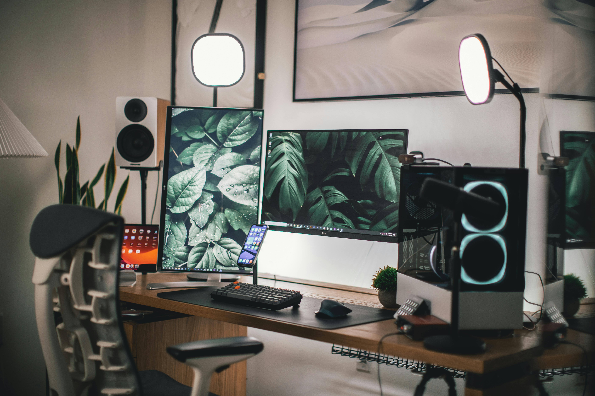

Top Story
Study Finds Gaming Setups Play Growing Role in Staying Connected
A fictional report from the Pixel Play Institute suggests that modern gaming spaces are playing a growing role in how people unwind, stay in touch, and share experiences online.
Researchers found that while players may be physically alone at their desks, they are often deeply engaged with friends through voice chat, cooperative sessions, and shared online goals. Participants reported that well-designed setups encouraged longer play sessions, smoother communication, and a stronger sense of connection despite distance.

Photo by Roberto Nickson
Trending
- Speedrunner Stops Mid-Run to Explain Trick to New Players
- Beloved Game Soundtrack Helps Students Focus During Finals Week
- Studio Announces Sequel and Says It Will Keep the Good Fishing Minigame
- Massive Minecraft Build Project Completed After Six Months of Teamwork
- Players Praise Update That Finally Lets Everyone Pet the Dog